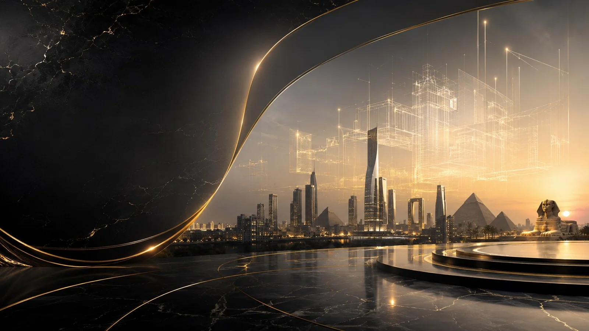
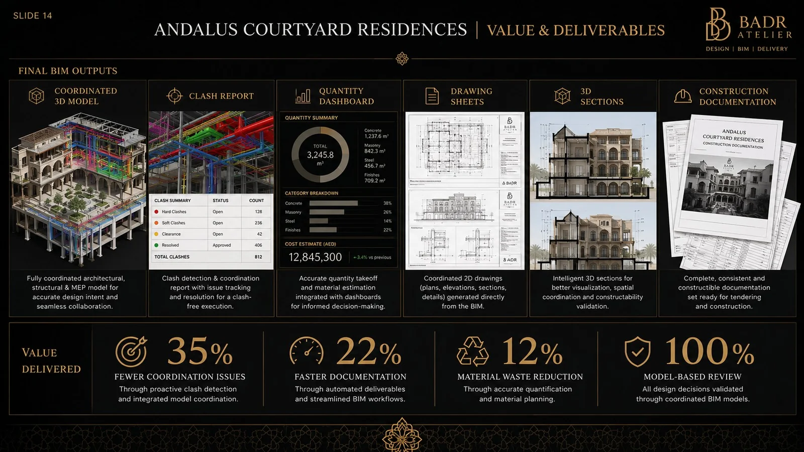
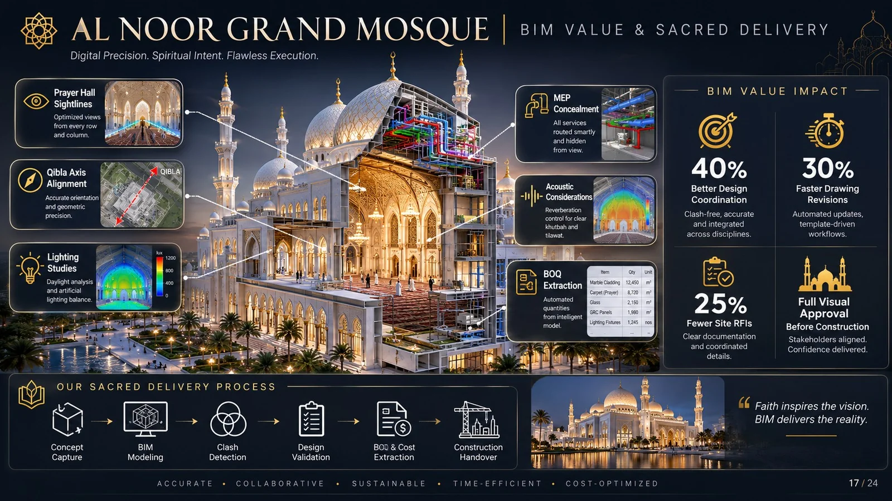
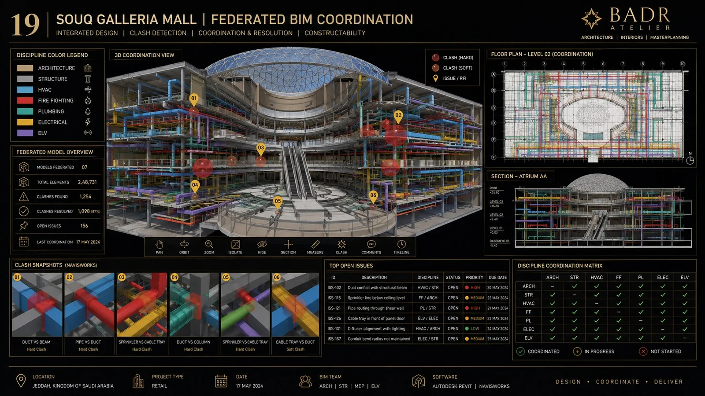
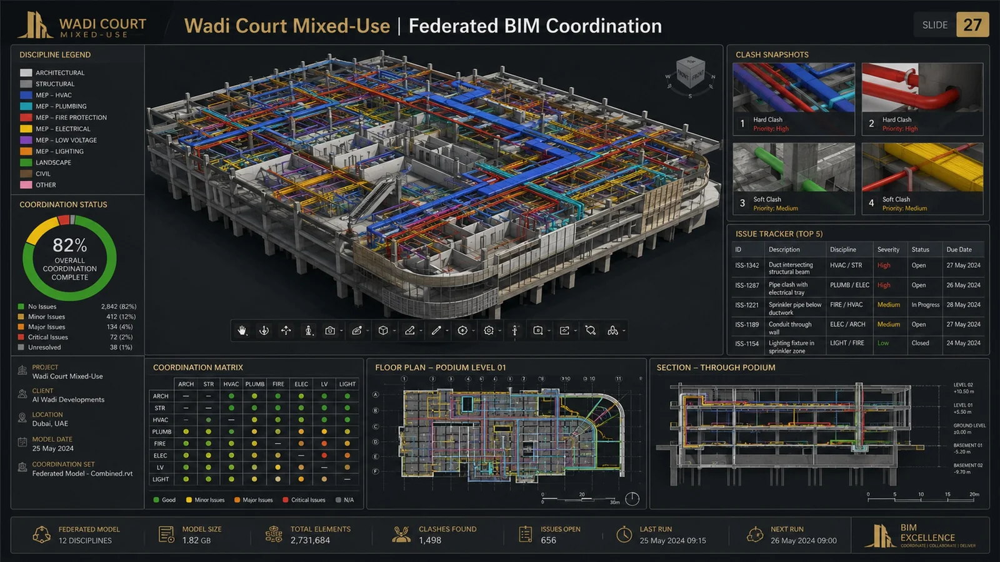
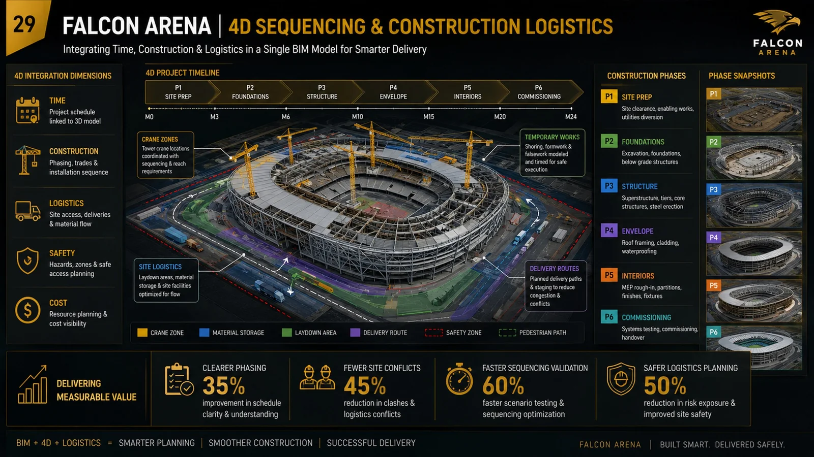

Coordinate before construction
Architecture, structure and MEP interfaces are tested early.
For BADR, BIM is not a software showcase. It is the coordinated building itself.

A coordinated model exposes issues earlier and protects the design promise.
Architecture, structure and MEP interfaces are tested early.
The team works from one connected representation.
Structured model information supports better quantity conversations.
The premium architectural idea survives technical coordination.
The represented BIM portfolio spans multiple building types.





BADR aims to protect architectural character through technical development.

The represented BIM scope covers the full digital delivery chain.